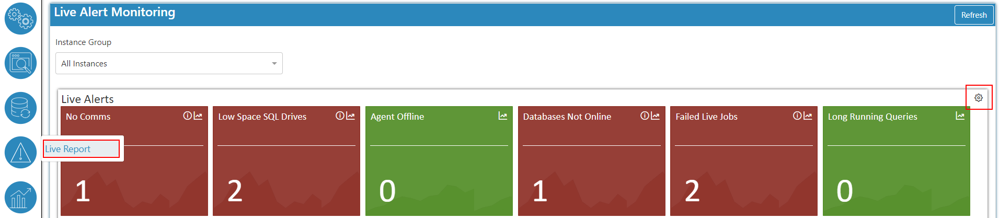
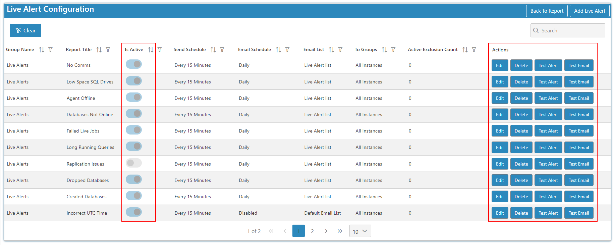
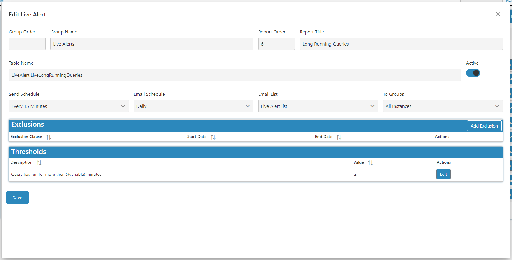
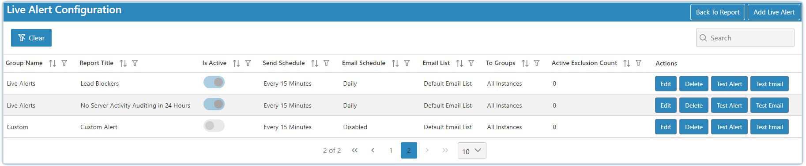
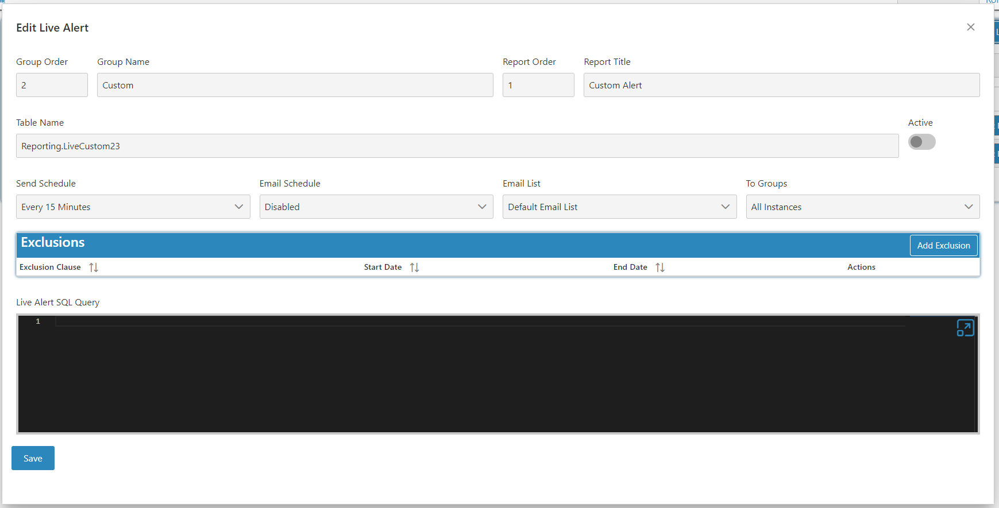
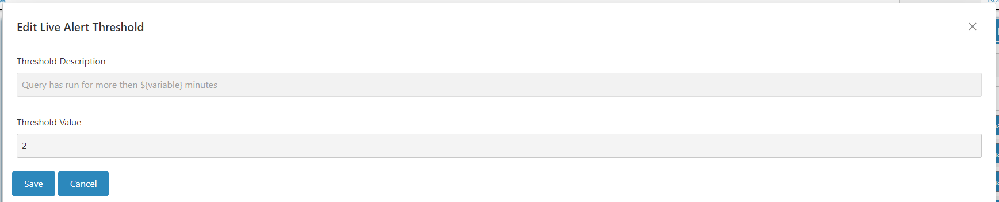
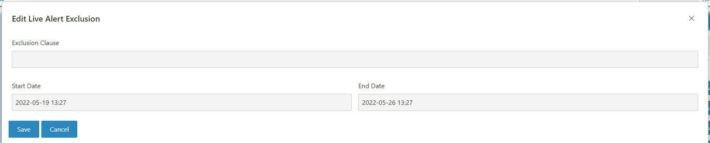

Edit
Live alerts are simple SQL scripts to identify issues to your environment.
To get to the Edit screen select the edit cog on the top right of the live alerts overview on the Live Report screen.

You can easily disable and enable your live alerts as well as adding your own live alerts. To add or remove an alert simply go to the live alert configurations page and simply mark the alert as active or slide to make it inactive.

On the edit screen for the system alerts you can add exceptions and customize the thresholds for certain system alerts.
Note
The threshold customization table will only be visible on system alerts that allow for that customization.

To add a custom live alert go to the add live alert button on configuration screen. Then a new row of the Custom live alert comes up like below

When adding/editing a custom live alert you can add a script of the custom alert you want. Exclusions are available to custom alerts.

Threshold Edit
You will not be able to change the description for the threshold, only the variable.

Exclusion Edit
Here you can add an exclusion clause and set the dates you want this exclusion to run between.
